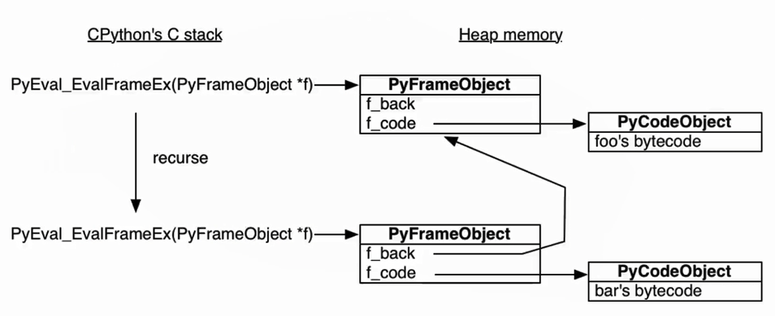
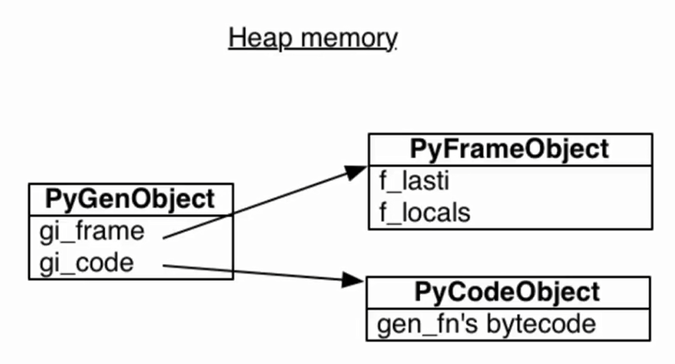

迭代器
什么是迭代器
- 迭代器是访问集合内元素的一种方式，一般用来遍历数据
- 迭代器和以下标的访问方式不一样，迭代器是不能后退的, 迭代器提供了一种惰性方式数据的方式
- list可以先取第1个然后再取第0个, 但是迭代器不可以.
- 可迭代对象必须实现
__iter__, 迭代器必须实现__iter__和__next__ - list中有
__iter__, 是一个可迭代对象, 但不是迭代器 - 可迭代对象调用
iter(a)返回一个迭代器
for循环
在调用for循环的时候会尝试调用iter(), 然后iter()首先会去找有没有__iter__, 如果有将返回一个迭代器, 如果没有将查看有没有__getitem__, 如果有将创建默认的迭代器使用__getitem__进行迭代输出.
自己实现一个迭代器与可迭代对象
把迭代器和可迭代对象分开, 把维护取值放在迭代器中！
from collections.abc import Iterator
class Company(object):
def __init__(self, employee_list):
self.employee = employee_list
# 可迭代对象中的__iter__返回迭代器
def __iter__(self):
return MyIterator(self.employee)
class MyIterator(Iterator):
def __init__(self, employee_list):
self.iter_list = employee_list
self.index = 0 # 需要在内部维护一个取值位置
# 继承了Iterator可以不写该方法, 如果重写那么 return self
# def __iter__(self):
# return self
def __next__(self):
#真正返回迭代值的逻辑
try:
word = self.iter_list[self.index]
except IndexError:
raise StopIteration # 抛出的异常应该是StopIteration
self.index += 1
return word
if __name__ == '__main__':
whw_com = Company(["whw","naruto","sasuke"])
for i in whw_com:
print(i)
"""
whw
naruto
sasuke
"""
生成器的理解
关于生成器，我们可以这样理解：带有 yield 的函数在 Python中被称之为 generator（生成器函数）。
生成器有关的说明如下：
- 一个带有 yield 的函数就是一个 generator，它和普通函数不同，生成一个 generator 看起来像函数调用， 但不会执行任何函数代码，直到对其调用 next()（在 for 循环中会自动调用 next()）才开始执行。
-
虽然执行流程仍按函数的流程执行，但每执行到一个 yield 语句就会中断，并返回一个迭代值，下次执行时从 yield 的下一个语句继续执行。
-
看起来就好像一个函数在正常执行的过程中被 yield 中断了数次，每次中断都会通过 yield 返回当前的迭代值。
-
事实上，在我们创建了一个generator后，基本上永远不会调用next()，而是通过for循环来迭代，并且不需要关心StopIteration的错误。
得到一个生成器
得到生成器的方式有两种：一种是生成器表达式另外一种是函数的方法
1、生成器表达式
其实，生成器表达式就是将列表推导式中的[]改成()就可以了：
generator = (i**2 for i in range(1,6))
2、函数的方法
利用函数的方法获取一个生成器，这个函数中必定包含yield关键字：
def generator(max):
while max > 0:
yield max
max -= 1
获取生成器中的值
我们可以通过next()方法（或者__next__()）以及for循环迭代获取生成器中的值
1、next方法获取生成器的值
generator = (i for i in range(1,6))
print(next(generator))
print(next(generator))
print(next(generator))
print(next(generator))
print(next(generator))
# 生成器中只有5个数，超出范围会抛出StopIteration异常
print(next(generator))
很明显，我们的生成器中只有5个值，但是取值的时候却next了6次，所以在第六次视图取值的时候，程序会抛出StopIteration异常。
2、for循环迭代
for循环本质上调用了可迭代对象的__iter__()方法，得到了该对象对应的迭代器对象，然后无限调用__next__()方法，得到对象中的每一个元素。直到StopIteration异常，代表迭代器中已无下一个元素，for循环自动处理该异常，跳出循环。
利用for循环的方法不用关心StopIteration异常，内部会做处理：
- for循环调用generator中的
__iter__() - 第一次调用
__iter__()会启动生成器, 执行到yeild, 返回一个生成器对象, i的值保存在生成器对象中. - for循环拿到值并不断对迭代器调用next, 直到返回异常跳出.
generator = (i for i in range(1,6))
for num in generator:
print(num,end=' ')
结果为：
1 2 3 4 5
为什么要用生成器
生成器存在的最大的意义就是：节省内存空间
我们来看一个Fibonacci数列的例子：一种占用内存的做法是这样的：
def fib(max):
lst = []
n,a,b = 0,0,1
while n < max:
lst.append(b)
a,b = b,a+b
n += 1
return lst
f = fib(6)
print(f) # [1, 1, 2, 3, 5, 8]
也就是说，我们把每一次的结果都append到一个列表中去了，最终将这个包含所有数据的列表返回。没错！聪明的你或许一眼就看出问题来了：如果这个max设置的特别大，那岂不意味着这个存放着所有数据的lst也会跟着增大，结果就会导致内存吃紧！
没错，生成器的存在就是为了解决上面“大量数据占用内存”的问题。
生成器解决上面问题的方法如下：
def fib(max):
n,a,b = 0,0,1
while n < max:
yield b
a,b = b,a+b
n += 1
f = fib(6)
for i in f:
print(i,end=' ') #1 1 2 3 5 8
对于生成器来说，它不会将函数产生的数据一次性的拿出来，而是在程序需要的时候，将数据一个一个的生产出来，相比于前面用列表一次性的将数据取出的方法，大大节省了程序对内存的占用，而这也是生成器在实际中最常用的情景之一。
Python是如何实现生成器的
Python中函数的工作原理
def foo():
bar()
def bar():
pass
foo()
- python的解释器会用
PyEval_EvalFramEx(C语言)函数去执行我们的foo函数. - 在运行foo函数的时候首先会创建一个栈帧(Stack frame), 这个栈帧是一个上下文, 也是一个对象.
- 栈帧会将foo函数变成一个字节码对象, 使用dis查看字节码
- 然后栈帧的上下文中去运行字节码(字节码是全局唯一的)
def foo():
bar()
def bar():
pass
import dis
print(dis.dis(foo))
2 0 LOAD_GLOBAL 0 (bar)
2 CALL_FUNCTION 0
4 POP_TOP
6 LOAD_CONST 0 (None)
8 RETURN_VALUE
None
- 当foo调用bar, 又会创建一个新的栈帧, 然后运行bar的字节码
- 所有的栈帧都是分配在堆的内存上, 如果不释放会一直存在, 所以栈帧可以独立于调用者存在, 就比如调用者foo不存在也没关系, 只要指针指向bar的栈帧就可以控制
import inspect
frame = None
def foo():
bar()
def bar():
pass
global frame
# 获取当前函数的栈帧并赋给全局变量frame
frame = inspect.currentframe()
foo()
print(frame.f_code.co_name)
# >>> bar
caller_frame = frame.f_back
print(caller_frame.f_code.co_name)
# >>> foo

- python解释器会编译字节码, 如果发现有yeild, 就会标记该函数, 然后再调用的时候会返回一个生成器对象. 而这个生成器对象实际上是把这个frame对象做了一个封装

- 生成器可以在任何时候、任何函数中恢复运行，因为它的栈帧并不在真正的栈中，而是堆中
- f_lasti指向“最后执行指令”的指针。初始化为 -1，意味着它没开始运行
斐波那契的实现
普通函数
def func(index):
a, b = 0, 1
i = 0
print(a)
while i < index:
print(b)
a, b = b, a + b
i += 1
func(10)
生成器
def func(index):
a, b = 0, 1
i = 0
print(a)
while i < index:
yield b
a, b = b, a + b
i += 1
for i in func(10):
print(i)
生成器的执行流程
对于生成器的执行流程，我们用下面代码来说明下：
def fib():
a = b =1
yield a
yield b
while 1:
a , b = b , a+b
yield b
g = fib()
for num in fib():
if num > 10:break
print(num)
这段代码其实是Fibonacci数列的另一种实现方式。首先，我们定义了一个生成器函数fib，然后将这个函数的执行结果赋值给g，也就是说，这里的g就成为了一个生成器。
当for循环开始遍历(迭代)这个生成器的时候执行fib函数内部的代码：第一句是将1赋值给a和b，接着遇到了yield a语句，当程序遇到yield语句时会暂时停下来，不执行后面的代码，而此时，我们在函数的外面就可以通过next(生成器对象)的方法获取当前yield后面的值（注意，for循环中自带了next()方法），而我们在for循环中得到的第一个值就是当前的a的值1;接着，for循环开始遍历第二个数（相当于执行第二个next(g)）的时候，又发现了yield b，根据前面的说明，此时会打印第二个yield后面的b的当前值 1；在for循环进行第三次遍历的时候进入while循环：首先将b的当前值赋值给a，然后将a+b的值赋值给b（Fibonacci数列的算法），然后遇到了第三个yield，因此第三次遍历相当于执行了第三次next(g)，于是此时会打印当前的b的值2，所以num的前三个值依次是：1、1、2。在第四次遍历的时候，再次在while循环中进行数据的赋值与交换操作，直到得到的值num不满足num>10这个条件为止。
总的来讲，其实就是函数在执行的过程中只要遇到yield关键字就会停止，等待外面发出next(生成器对象)的信号再将yield后面的值返回。
下面的例子可能会更有助于大家理解：
我们先打印一个next(g)看一下结果：
def count(n):
while n > 0:
print('before yield')
yield n
n -= 1
print('after yield')
g = count(5)
print(next(g))
结果为：
before yield
5
然后我们打印两次next(g)的时候看一下结果：
before yield
5
after yield
before yield
4
我们可以看到"after yield"其实是在第二次执行next(g)的时候打印的，这也充分说明了第一次的时候count函数停在了yield n那里。
从上面的例子我们还可以看到：如一个函数中出现多个yield则next()会停止在下一个yield前
def generator():
print('one')
yield 123
print('two')
yield 456
print('end')
g = generator()
# 第一次运行，暂停在 yield 123，打印one与123
print(next(g))
# 第二次运行，暂停在 yield 456，打印two与456
print(next(g))
# 第三次运行，先打印end，但是由于后面没有yield语句了，因此再使用next()方法会报错
print(next(g))
上面代码的结论需要好好理解。
生成器中的return
关于生成器中用return，个人总结有逻辑结束与显示调用两种
逻辑结束
所谓逻辑结束，其实就是我们在设计程序的时候，在不满足一些条件的情况下，直接使用return跳出函数：
def read_file(path):
size = 1024
with open(path,'r') as f:
while True:
block = f.read(size)
if block:
yield block
else:
return
这种情况下使用return实际上是从程序的安全性考虑的，当我们读取一个文件的时候如果遇到空文件直接跳出函数，避免了read得到的无效数据致使后续操作抛出异常。
显示调用
从网上查看相关文档，有这样的说法：作为生成器，因为每次迭代就会返回一个值，所以不能显示的在生成器函数中return 某个值，包括None值也不行，否则会抛出“SyntaxError”的异常。但是本人在测试的时候发现这种情况只在python2中会有，我自己用的python3.6.8解释器并没有报错：
python2解释器下的情况：
Python 2.7.15 (v2.7.15:ca079a3ea3, Apr 30 2018, 16:30:26) [MSC v.1500 64 bit (AMD64)] on win32
Type "help", "copyright", "credits" or "license" for more information.
>>> def func():
... yield 123
... return 666
...
File "<stdin>", line 3
SyntaxError: 'return' with argument inside generator
python3.6.8解释器运行结果：
Python 3.6.8 (tags/v3.6.8:3c6b436a57, Dec 23 2018, 23:31:17) [MSC v.1916 32 bit (Intel)] on win32
Type "help", "copyright", "credits" or "license" for more information.
>>> def func():
... yield 123
... return 666
...
>>> g = func()
>>> print(next(g))
123
yield返回值与send方法
看下面代码：
# -*- coding:utf-8 -*-
def func():
print('one')
yield 123
print('two')
yield 456
print('end')
g = func()
print(next(g))
print(next(g))
结果为：
one
123
two
456
这里你可能会想：yield 123我们打印出来123，yield 456打印出了456，那么，123与456是不是yield的返回值呢？答案当然不是。
实际上，我们获取到的yield后面的值其实是通过next()方法得到的，而yield本身是有返回值的，默认情况是None
我们在上面的代码基础上做一些改动来看一下：
def func():
print('one')
a = yield 123
print(a)
print('two')
yield 456
print('end')
g = func()
print(next(g))
这里我们将第一个yield的返回值赋值给了a，接下来打印a。但是由于程序运行到第一个yield的时候会停下来，不会接着执行，因此第一次不会打印a，结果为：
one
123
而如果我们在上面代码的基础上再加一个next(g)的话，打印的结果如下：
one
123
None
two
456
我们会发现在进行到第二个yield的时候123与two之间打印出了None，这个None其实就是第一个yield的默认返回值
想要修改这个返回值，或者说为其赋值的话，我们就可以使用send方法：通过send方法去为上一次被挂起的yield语句赋值。
看下面的代码：
def my_generator():
value = yield 1
value = yield(value)
value = yield(value)
g = my_generator()
print(next(g))
print(g.send('hello'))
print(g.send('world'))
结果为：
1
hello
world
具体的过程说明如下：
- 当调用gen.next()方法时，python首先会执行MyGenerator方法的yield 1语句。由于是一个yield语句，因此方法的执行过程被挂起，而next方法返回值为yield关键字后面表达式的值，即为1。
-
当调用gen.send('hello')方法时，python首先恢复MyGenerator方法的运行环境。同时，将表达式(yield 1)的返回值定义为send方法参数的值，即为'hello'。这样，接下来value=（yield 1）这一赋值语句会将value的值置为'hello'。继续运行会遇到yield value语句。因此MyGenerator方法再次被挂起。同时，send方法的返回值为yield关键字后面表达式的值，也即value的值为'hello'。
-
当调用send('world')方法时MyGenerator方法的运行环境。同时，将表达式(yield value)的返回值定义为send方法参数的值，即为'world'。这样，接下来value=（yield value）这一赋值语句会将value的值置为'world'。第三次打印'world'。
可以看到：第一个的next取到了1；我们把'hello'赋值给第一个yield作为其返回值，所以第二次取到的是'hello'，同样的，第三次取到的是我们为第二个yield表达式send的返回值'world'。
总的来说，send方法和next方法唯一的区别是在执行send方法会首先把上一次挂起的yield语句的返回值通过参数设定，从而实现与生成器方法的交互。
但是需要注意，在一个生成器对象没有执行next方法之前，由于没有yield语句被挂起，如果非要是用send方法，那么这个在第一个位置的send方法里面的参数必须是None，否则会报错。
下面是错误的写法：
def my_generator():
value = yield 1
value = yield(value)
value = yield(value)
g = my_generator()
print(g.send('hello'))
print(g.send('world'))
程序会报这样的错：
TypeError: can't send non-None value to a just-started generator
如果非要在第一次使用send方法，正确的写法是在send方法中加参数None：
def my_generator():
value = yield 1
value = yield(value)
value = yield(value)
g = my_generator()
print(g.send(None))
print(g.send('hello'))
print(g.send('world'))
结果为：z
1
hello
world
因为当send方法的参数为None时，它与next方法完全等价。但是注意，虽然上面的代码可以接受，但是不规范。所以，在调用send方法之前，还是先调用一次next方法为好。
利用yield实现简单的协程案例——生产者消费者
这是yield十分关键的用处，理解了yield的机制对理解协程并进行相关并发的程序设计十分有帮助！
所谓协程，可以简单理解为函数之间的相互切换。而利用yield与send方法我们可以十分方便的实现这种效果：
# -*- coding:utf-8 -*-
import time
def consumer():
# consumer作为一个生成器
while 1:
data = yield
def producer():
# 生成器对象
g = consumer()
# 先next后面才能send具体的非None的值,相当于先send一个None
next(g)
for i in range(1000000):
g.send(i)
if __name__ == '__main__':
start = time.time()
#并发执行,但是任务producer遇到io就会阻塞住,并不会切到该线程内的其他任务去执行
producer()
print('执行时间：',time.time() - start)
结果为：
执行时间： 0.12068915367126465
当然这涉及到了协程与IO阻塞相关的知识，我们这里不做讨论，上述函数是为了说明yield与send在函数任务之间不断切换的功能
参考文献：
https://www.cnblogs.com/wj-1314/p/8490822.html
https://blog.csdn.net/jason_cuijiahui/article/details/84947310
https://blog.csdn.net/zxpyld3x/article/details/79181834
https://blog.csdn.net/hedan2013/article/details/56293173